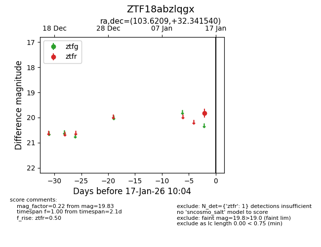
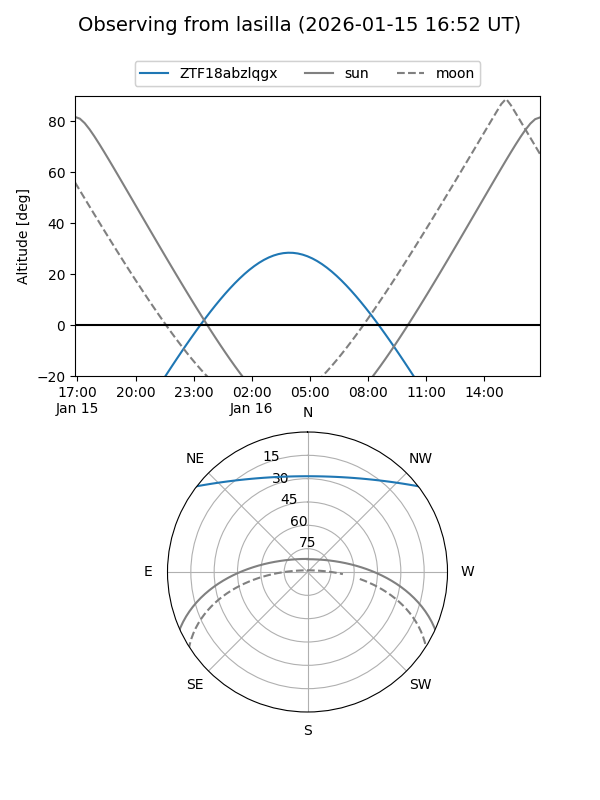
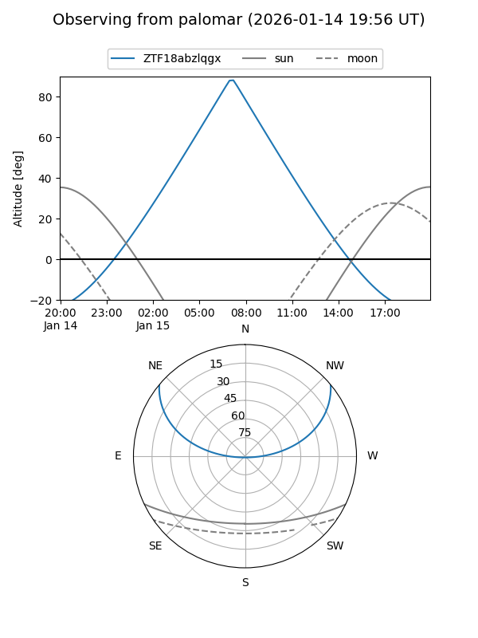

ZTF18abzlqgx
Target ZTF18abzlqgx at 2026-01-17 10:05
Aliases and brokers:
FINK: link
Lasair: link
ALeRCE: link
alt names
ZTF18abzlqgx (ztf,fink_ztf)
Coordinates:
equatorial (ra, dec) = 103.6209,+32.34154
equatorial (HMS+DMS) = 06:54:29.02,+32:20:29.54
galactic (l, b) = (183.7914,+14.71007)
Flags:
Photometry:
last ztfr=19.83
1 ztfr detections
Lightcurve

Visibility


Additional plots